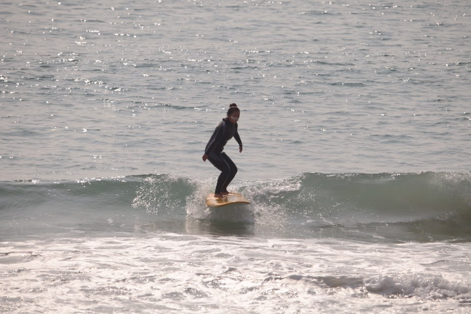

도전목표: 사이드라이딩

작은 파도였지만 충분히 잡을 수 있었음.
일어나도 핀이 꽂혀서 롱라이딩 불가능했음.
라인업을 너무 앞에 잡아서 파도가 내 뒤에서 이미 너무 날이 선상태
잡으려 시도하면 계속 꽂혔음
(성급했던게 실수..라인업을 충분히 뒤로 가지않았는데 파도가 오니 그저 잡고싶은 마음에..)
파도가 뒤에 팍 쳐줬을때 패들링 조금만 더해서 잡기
<파도 이해하기>
1.무조건 빡패들이 아니라 파도가 날이 서는 위치까지 내 위치를 조정하는것
2.파도가 바로 뒤에왔을때 파도에 속도 맞추기
3.파도에 끌려올라갔을때